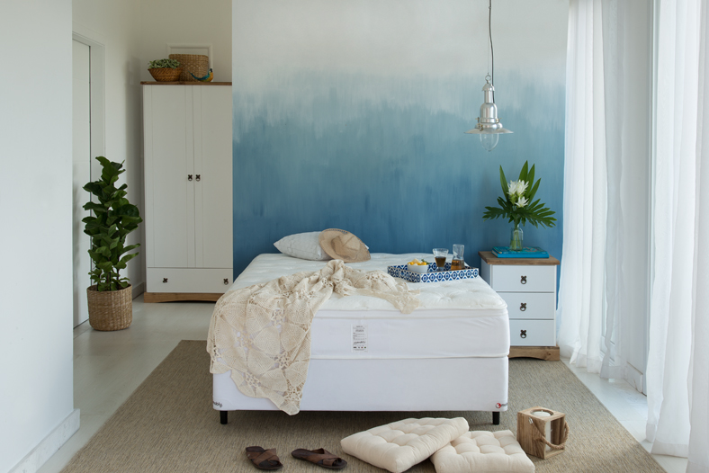
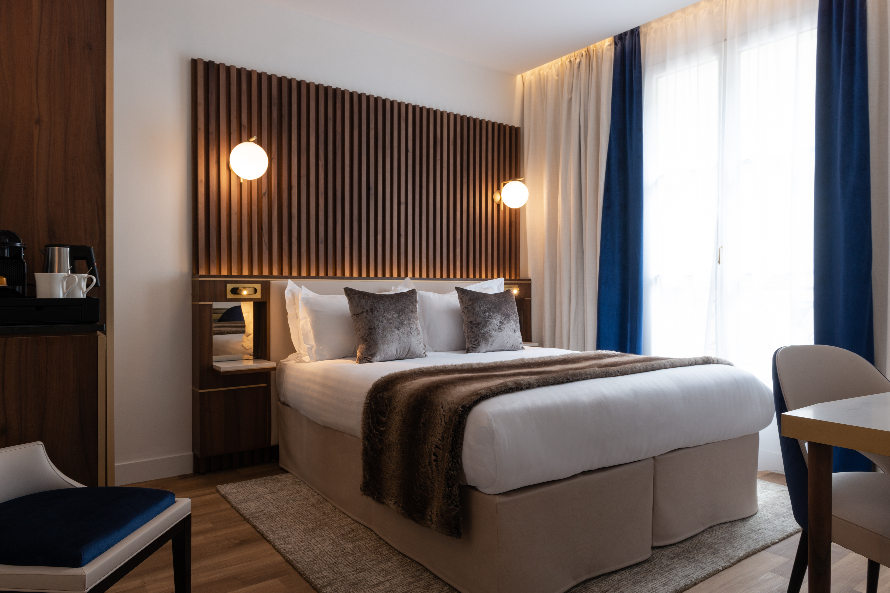
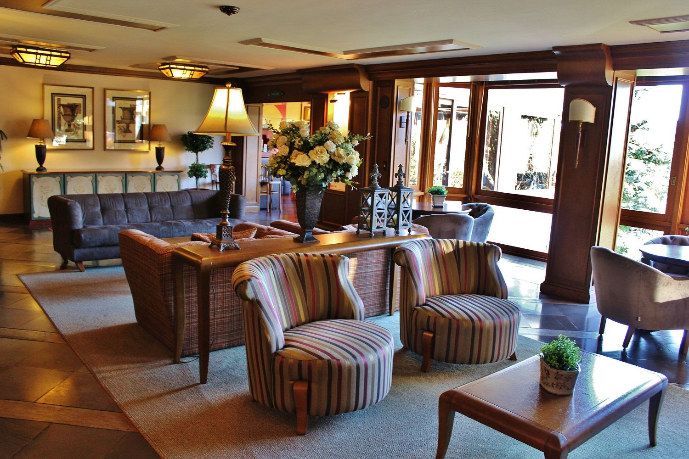
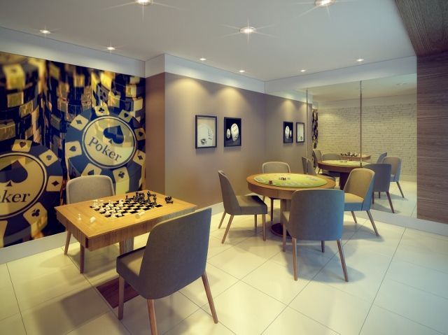
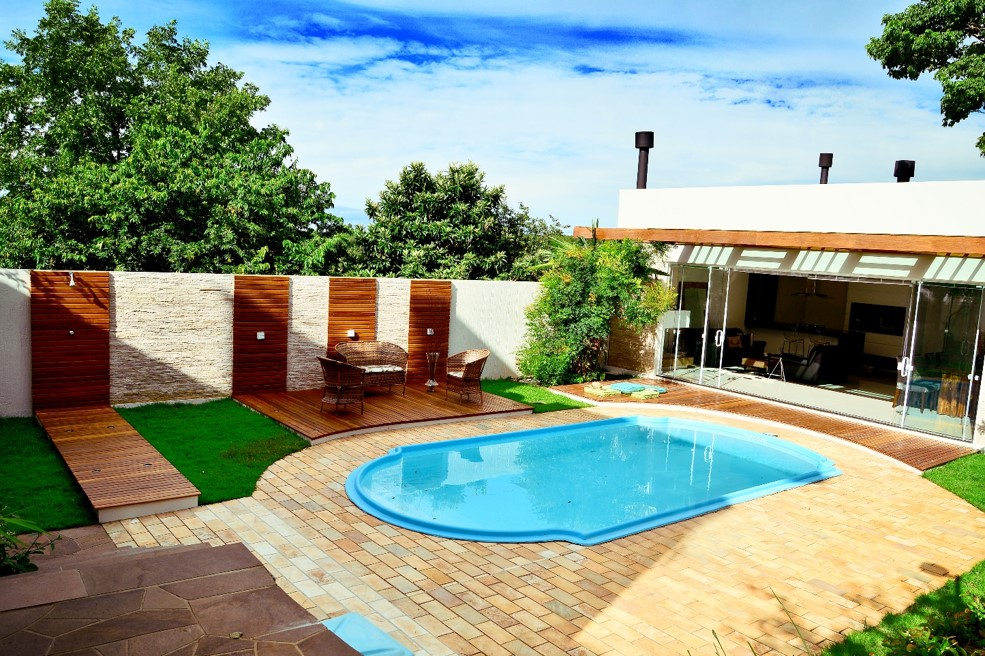
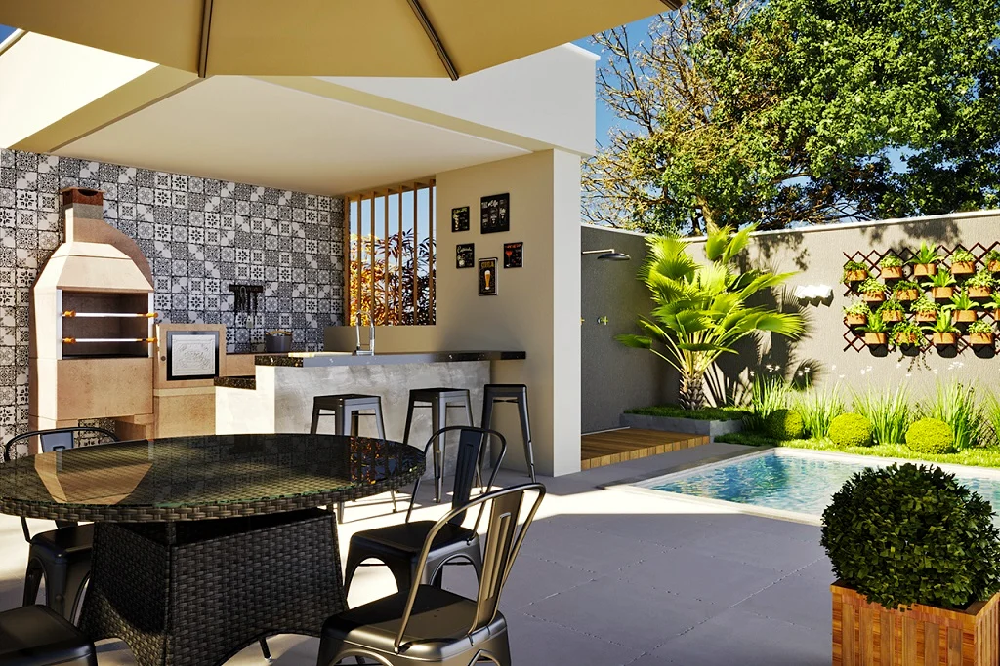

Morada dos Ipês é uma instituição não filantrópica especializada em cuidados com idosos.
Nosso objetivo é
prover o maior conforto possível para idosos em situação de vulnerabilidade.
Fundada em 1970, a Morada dos Ipês nasceu do sonho de três jovens que buscavam melhorar pelo menos um pouco
nosso mundo.
João Joaquim José, Maria Marques Muniz e Pedro Pascal largaram seus empregos e fundaram essa instituição. Com a
ajuda da prefeitura da cidade, seus habitantes e as igrejas locais conseguiram tornar o sonho em realidade.
Atualmente nossa instituição é referência em entre todas as casas de repouso da região, servindo como base para
aqueles que buscam um lugar para que seus parentes possam relaxar e descansar da melhor forma possível.
Quartos Individuais:
|  |  |
Ambientes Compartilhados:
|  |  |
Ambientes Externos:
|  |  |
Profissionais:
|
|
Atendimento e visitação 24 Horas.
Venha nos visitar!